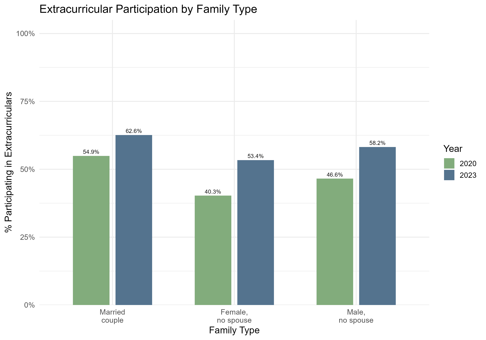

Question 1
How do household socioeconomic status, family structure, gender, and demographic factors interact to shape children's access to and participation in extracurricular activities over time?
Family type
Children in married-couple households had the highest extracurricular participation in both years, while children in single-parent households had lower rates. The female-no-spouse and male-no-spouse categories were both below married-couple households, with the female-no-spouse group generally lowest. Participation rose from 2020 to 2023 for all family types, but the relative ordering stayed the same. This suggests that household structure matters, not just family income or education. The differences may reflect variation in time, resources, supervision, or ability to pay for activities.
